The camera sweeps down over the kingdom and its forests.
One screen
Config, projects, sessions, commands, schedules, git and files, without switching to a terminal.
Local only
Runs on 127.0.0.1, reads Claude Code’s files, uses your own claude login. No accounts, no cloud.
Fun on purpose
A living map, a knight with opinions, wandering bards and witches, and a Halloween you did not ask for.
The feature tour
A walk through the realm
✦ ✦ ✦
Kingdom & world
The start page is a three.js god view in the spirit of Warcraft II. Your disk becomes a map you can read at a glance.
- Each parent folder is a walled district, each project a building; size follows activity, colour follows status.
- Live Claude sessions are knights at work, agents walk the streets as townsfolk, scheduled jobs are glowing hourglasses.
- RTS controls: minimap, selection portrait, a 3×3 command grid with hotkeys, box-select, drag buildings to move them.
- A landscape to the horizon: forest belt, rocks, rivers, beaches and open sea, with dawn, day, dusk, night and weather.
- Themes: Classic, Halloween (dead groves, pumpkins, graves, ghosts), Winter and Christmas, or Auto, which picks by the date.
- Many building kinds for projects (nine more were just added), shown again on the project page, and a map that adapts its quality so a full-screen kingdom stays smooth.
- Buttons that move: hover and press animations across the commands, spells and panels.
- Wandering folk (Gerald the Lost Bard, Old Mags the Swamp Witch, Brother Tobias) say something when clicked.
- The Armoury browses the whole KayKit collection (4,000+ CC0 models) and shows what the kingdom uses.
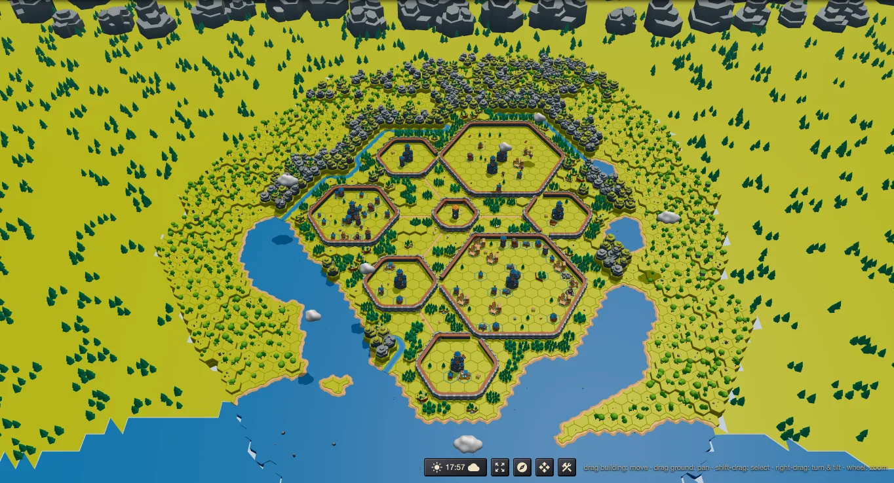


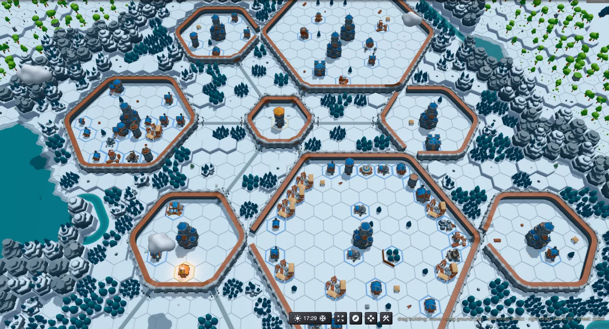
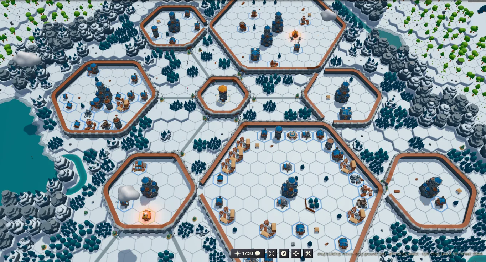
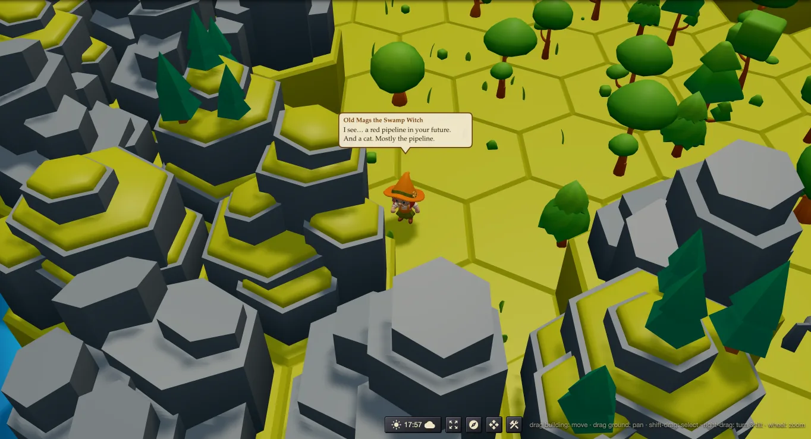

Projects & Chat
Every folder that looks like a project gets its own page, found by scanning the parent folders you register.
- Its commands as buttons with hotkeys, Ask Claude, open in the Claude app, a terminal right here, Finder, VS Code or WebStorm.
- Chat tab: every Claude session of the folder, from the dashboard, the terminal, the desktop app or the IDE, reads like a chat.
- Full history with tool calls as compact chips; continue any thread with one composer, model picker and auto-approve. The session bar shows the current context size.
- CLI-only slash commands get a hint card, and any chat can continue in the real interactive Claude Code CLI with one click; when Claude refuses a folder outside the project, the chat points you to the CLI.
- Choose the terminal for new shells and CLI sessions: the built-in one, Terminal, iTerm2 or Warp.
- A project without a CLAUDE.md gets a Generate CLAUDE.md button; the project dropdown groups folders and sub-projects.
- Links, setup, run history and statistics per project; the Ledger lists them all.
Automation: commands, spells, jobs, Conjure
Everything you would type in a terminal can run from the dashboard, the map, a schedule or your phone.
- Commands console: run named commands or any shell line in the project folder, output streams live, stop any time.
- Spellbook: generic commands with {placeholders} you can cast in any project; each spell carries an artifact that rises over the building when cast.
- Jobs: scheduled prompts or commands, once or on a cron, with history and an optional Telegram push.
- Conjure with AI: describe a spell or a job in plain words; Claude drafts it into the regular form and warns when it looks destructive.
- Permissions: one tree of tools Claude may use, globally and per project, with a tidy-up that promotes repeated rules.

Terminal
A real shell for every project, with the kingdom looking over its shoulder.
- A real interactive shell (pty) per project: Tab completion, vim, ssh and your own zsh setup all work.
- A banner follows the shell wherever it wanders, turns red outside the project, and has a home button and a one-click “project root”.
- Spells sit in a row above the shell: pick one, fill its {placeholders} in a small form and it is typed into the shell for you.
- Every command typed in a project or district shell is counted by a zsh hook; the most used rise to the top of the history, and you can drop entries you do not want.
- Districts have a shell too, and a Claude CLI session, from the HUD or by voice.
- Choose where new shells and CLI sessions open: the built-in terminal, Terminal, iTerm2 or Warp (Config page).
- Shells are numbered (shell 1, shell 2…) and renamable, so you can tell them apart on the Processes page.

The Quest Board
Your open Jira tickets, as quests nailed to the castle gate.
- Connect once on the Config page: Jira address, the email of your account and an API token. The login is kept in a private file and is never sent back to the browser.
- Each quest shows its key (a link into Jira), summary, priority, status and the date it last changed, with an “Open in Jira” button.
- Status badges show how many quests sit in each status and filter the board; pick several at once and clear with one click.
- Project badges do the same per project, so a busy day can be cut down to one repository.
- Make the query yours: another assignee than you, and a list of statuses to leave out (Done, Closed, Resolved and similar by default).
- An empty board says so, in character: “No quests today, milord.”
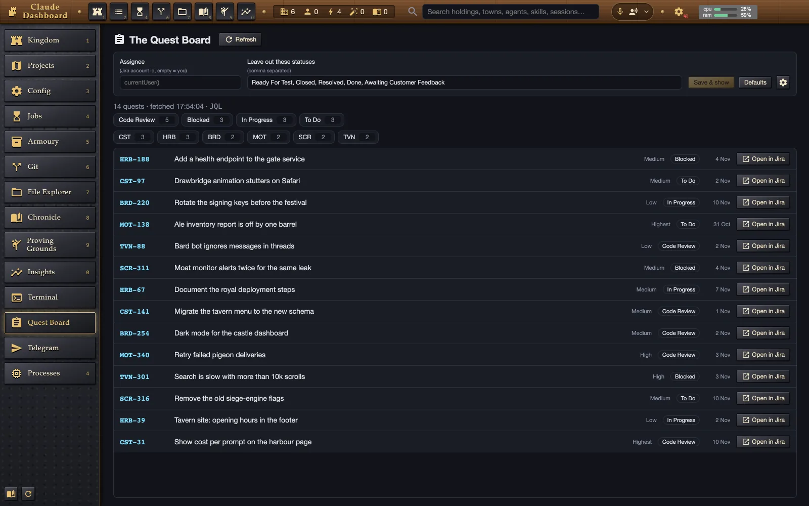
Processes
Everything that runs or waits for you, in one list.
- Every Claude chat that is working, waiting for your reply, or waiting with a question, plus every running shell, with a chat or terminal icon.
- One row per conversation, even when it took several replies; click a row to jump straight to its window.
- Each row shows what it is doing: the last command typed in a shell, or the last prompt of a chat.
- Close a waiting chat to take it off the list; the conversation stays in the project’s Chat tab, and a new reply brings it back.
- Stop a process and the row shows Stopping… until it is really gone. Filters for All, Chats, Shells and Waiting, each with a count.
- The top-bar run menu uses the same icons and takes you to the same windows.
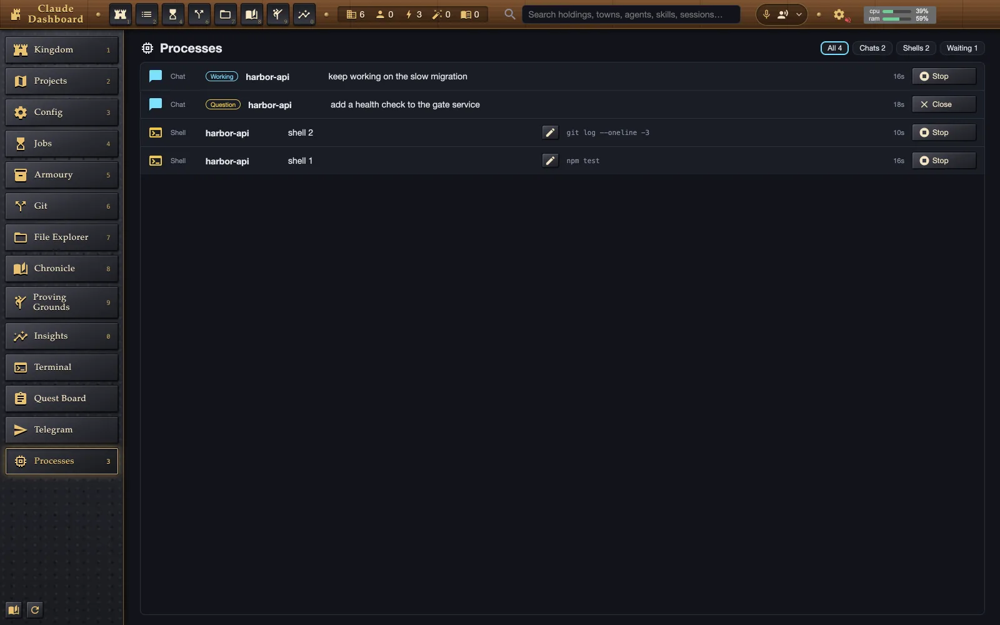
Insight: Git, Files, usage, system
The things you would otherwise open five tools for, side by side.
- Git: every repository with its branch, ahead/behind and changes; stage, commit, pull, push, stash and diffs inline.
- File Explorer: browse and preview any project, find a file by name (⌘P) or search inside files (⌘⇧F), copy relative paths.
- Usage indicator: your 5-hour and weekly plan limits from the Claude Code status line, plus tokens per model and project.
- System indicator: CPU and memory, and which dashboard processes use them.
- Insights has a Today range and a day picker.
- Line numbers in the file viewer and in every git diff.
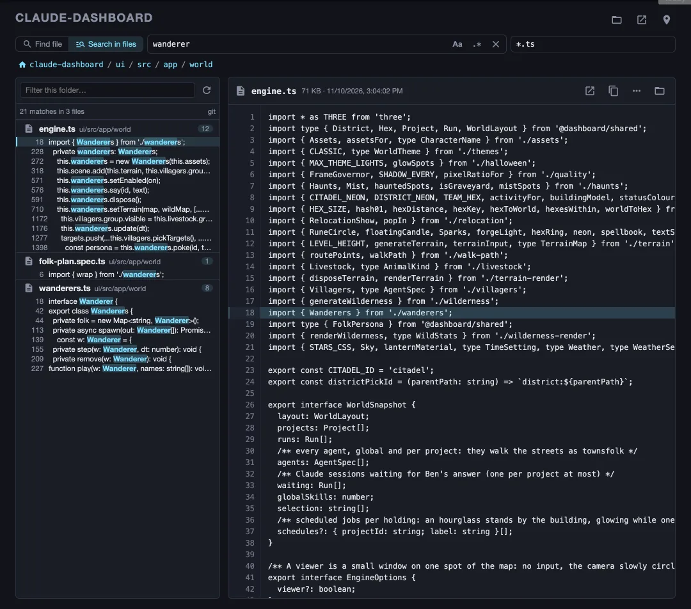
Insights
Where the tokens, the hours and the money went.
- Four tiles: cost, active time, sessions and prompts, with the cost per prompt.
- Ranges from Today (with a day picker) to the whole history; switch the charts between cost and time.
- A bar per day, the same data by project and by model, and the list of sessions behind any bar you click.
- Filter everything to one project.
- Cost is the API price of the tokens, not what your plan bills; active time leaves out pauses over five minutes.
- Sessions whose transcripts Claude Code has deleted are still counted, from the dashboard’s own history.

Voice & Telegram
Sir Claude, the knight, talks back: deep, British, loyal and mildly condescending towards your code.
- Click the mic and talk: “run lint on parking”, “ask Claude to add a badge”, “what failed?”. Hold V for push-to-talk.
- Speech recognition runs locally (whisper.cpp on the Mac’s GPU, or Whisper base), the voice is Kokoro TTS, all offline.
- He announces finished sessions and runs; his personality is a markdown file you can edit.
- Telegram: the same commands, prompts and job results from your phone, one topic per project. A Telegram page keeps the full log of messages in and out, saved on disk.
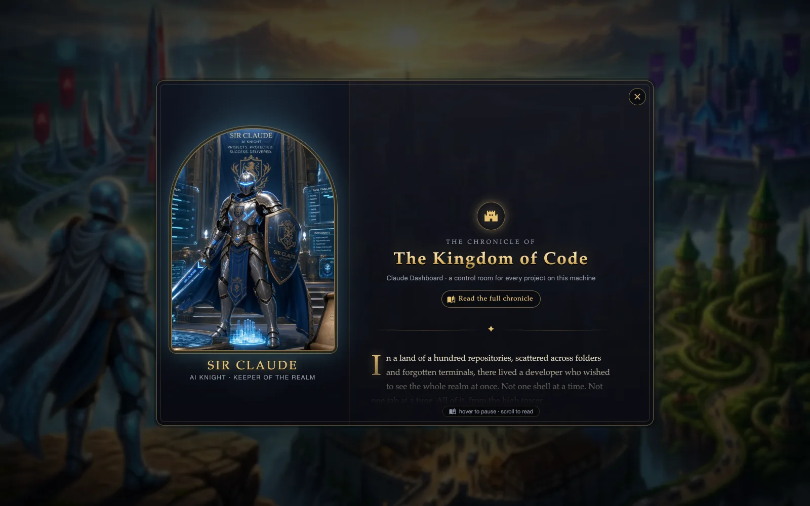
Telegram
The kingdom in your pocket, one topic per project.
- One Telegram group with Topics: General, plus a topic per project. Write or speak; Sir Claude decides whether to run a command, send a request to Claude Code, or just answer.
- Slash commands too: /projects, /run, /ask, and /voice on|off to get voice notes in a topic.
- Pushes with a switch each: runs started from Telegram, scheduled jobs, finished Claude sessions, and Claude waiting for an answer. Failures and questions come with a voice note.
- Only the people you allow can talk to it, paired during a short pairing window opened from the Config page.
- The Telegram page keeps the whole log of messages in and out, saved on disk: filter by project and direction, load older days, or clear it.
- Messages from strangers are logged as “ignored” without their content; the bot token is never written to the log.

Proving Grounds
Pit LLMs against your own prompts and keep the score.
- A prompt library with variables, tags, a system prompt, text or image mode.
- Testers: inputs plus checks (contains, regex, valid JSON, max cost or latency, an LLM judge with a rubric).
- Run a tourney across Claude, GPT, Gemini, DeepSeek, Grok, Kimi and free models via OpenRouter; pass rate, cost and latency per model.
- A champion is crowned, every run is kept in the history.
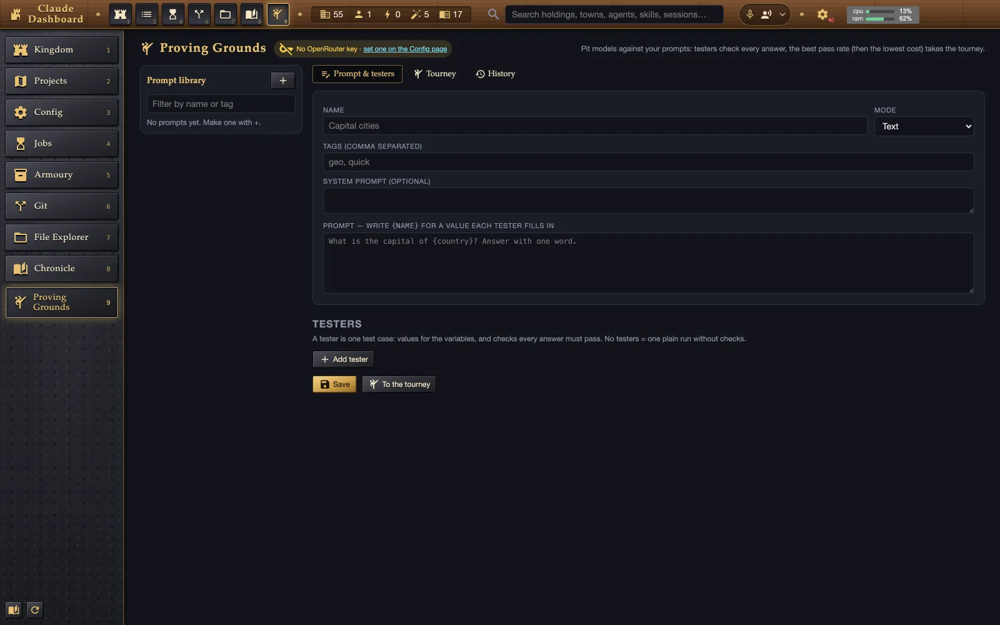
The Chronicle
How the kingdom was built, told as an illuminated manuscript.
- Twenty-five chapters, from the Founding to the Pigeon Archive, each opening with its own illustration.
- Drop caps, royal decrees for commits, and the date of each chapter in the margin.
- Chapter navigation, reading progress, a lightbox for the art, and Sir Claude can read each chapter aloud.
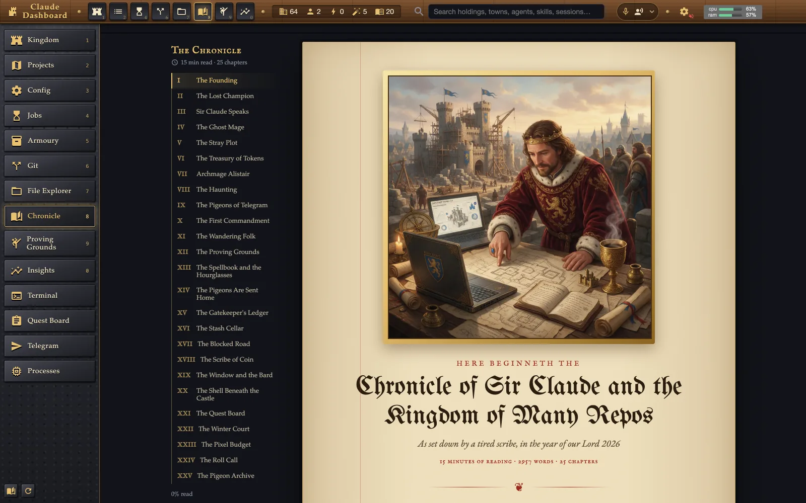
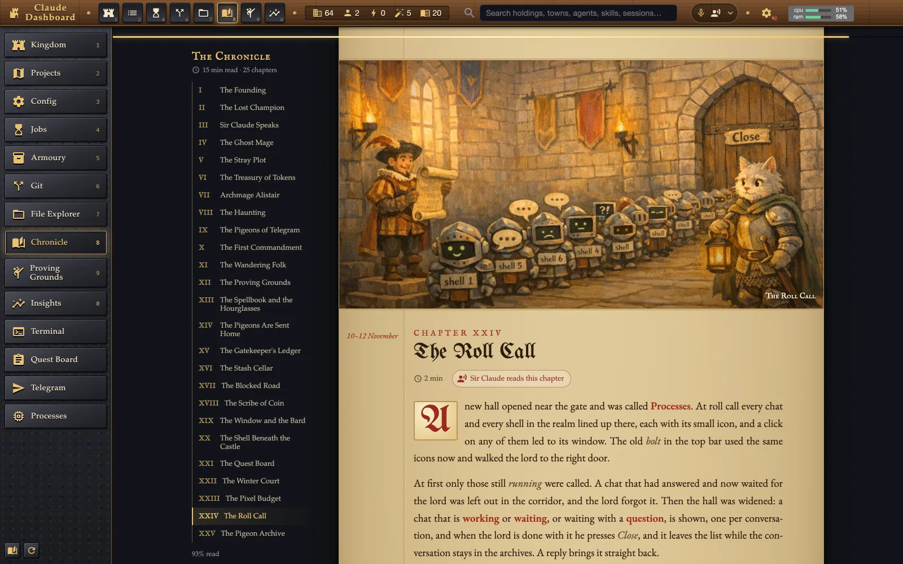
How it works
A small server, a browser, and Claude Code
- A Fastify server on
127.0.0.1is the only part that touches the disk and starts processes; it checks Host and Origin on every request. - It scans the parent folders you register, reads Claude Code’s own files read-only for sessions, agents, skills and MCP servers, and keeps its own state in
~/.claude-dashboard/. - Commands and Claude runs (
claude -p, stream-json) run in a pty; their output streams to the browser over WebSockets. - The Angular UI draws the kingdom with three.js, and the panels, consoles and chat around it. Telegram, voice and the scheduler call the same functions as the UI.
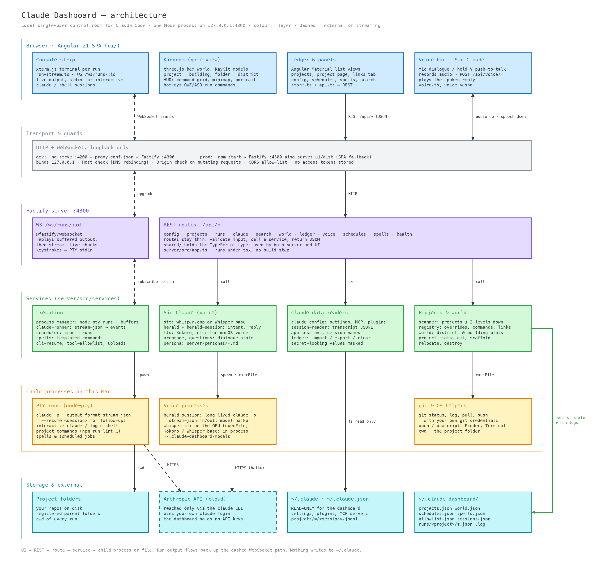
Tech stack
claude -p with stream-json, your own loginRun it
Raise your own kingdom
One command. Needs Node.js 22.12 or newer and the Claude Code CLI, logged in. macOS is the main target.
npx sir-claude # http://localhost:4300, 127.0.0.1 only
npx sir-claude --port 4400 # another portOpen the UI, add a parent folder such as ~/Sources on the Projects page, and every project up to two levels down appears on the map. The dashboard only reads Claude Code’s files; everything it writes lives in ~/.claude-dashboard/. Package: npmjs.com/package/sir-claude.
Working on the dashboard itself? Run it from a clone
npm install # once; node-pty ships macOS prebuilds
npm run kit # once; downloads the KayKit models (CC0) for the map
npm run dev # server on http://127.0.0.1:4300, UI on http://localhost:4200
# optional
brew install whisper-cpp && npm run voice-models # the best speech recognition
npm run build && npm start # one port: http://localhost:4300
npm run install-service # keep it running as a launchd serviceJoin the round table
Become a member
Sir Claude is closed source, but members get access to the code on GitHub. Send a raven by whichever means you prefer.